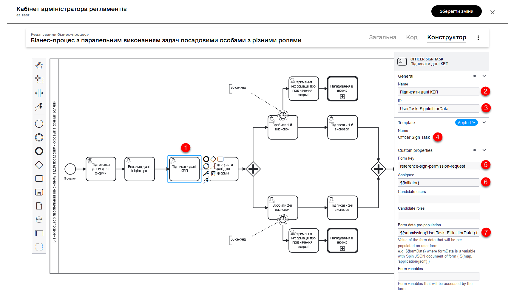

Моделювання паралельного виконання задач надавачами послуг із різними ролями
- 1. Загальний опис
- 2. Моделювання бізнес-процесу
- 2.1. Скрипт передзаповнення даних на формі ініціатора
- 2.2. Користувацька задача для внесення даних
- 2.3. Користувацька задача для підписання даних КЕП
- 2.4. Скрипт для відображення даних на формах у надавачів послуг
- 2.5. Створення паралельного шлюзу
- 2.6. Користувацька задача для відображення даних посадовій особі з роллю officer-first-rank
- 2.7. Додавання таймера до користувацької задачі
- 2.8. Скрипт отримання інформації про призначення задачі
- 2.9. Додавання Call Activity для відправлення нагадувань
- 2.10. Створення користувацької задачі для підписання даних (1-й висновок)
- 2.11. Створення блоку задач для надавачів послуг із другою роллю
- 2.12. Додавання "збирального" паралельного шлюзу
- 2.13. Скрипт для відображення даних на формі з фінальним висновком
- 2.14. Користувацька задача для винесення фінального висновку
- 2.15. Користувацька задача для підписання фінального висновку КЕП
- 2.16. Скрипт для підготовки даних до збереження у БД
- 2.17. Створення сервісної задачі для підписання даних системним ключем
- 2.18. Створення сервісної задачі для збереження даних
- 2.19. Створення ексклюзивного шлюзу із двома гілками для погодження або відхилення повноважень
- 2.20. Налаштування умов для ексклюзивного шлюзу
- 2.21. Встановлення результатів виконання та завершення бізнес-процесу
1. Загальний опис
Ми розробили референтний приклад бізнес-процесу, який є відмінною ілюстрацією моделювання складних процесів, де залучені посадові особи з різними ролями. Основні аспекти та можливості цього бізнес-процесу включають:
-
Паралельне виконання задач:
-
Процес розроблено таким чином, що дозволяє одночасне виконання задач різними посадовими особами. Це забезпечує ефективність та оптимізацію часу, оскільки декілька етапів процесу можуть виконуватися паралельно.
-
-
Урахування різного часу на опрацювання задач для різних ролей:
-
У моделі процесу передбачено, що різні ролі мають різний час для опрацювання своїх задач. Це дозволяє керувати очікуваннями та завданнями відповідно до специфіки кожної ролі.
-
-
Надсилання нагадувань про необхідність прийняття задачі для опрацювання:
-
Для кожної ролі передбачені механізми надсилання нагадувань, коли час на прийняття задачі закінчується. Це забезпечує, що задачі не залишаються без уваги та сприяє своєчасному їх виконанню.
-
-
Використання ексклюзивних та паралельних шлюзів:
-
У процесі використовуються ексклюзивні шлюзи для рішень (наприклад, погодження чи відхилення заявки) та паралельні шлюзи для синхронізації потоків процесу. Це забезпечує гнучкість у прийнятті рішень та координацію дій між різними учасниками процесу.
-
-
Інтеграція сервісних задач для автоматизації процесів:
-
Процес включає сервісні задачі для автоматизованого підписання даних, надсилання нагадувань та збереження інформації в базі даних, що підвищує його ефективність та знижує ризик людської помилки.
-
2. Моделювання бізнес-процесу
Де можна знайти приклад референтного бізнес-процесу?Адміністратор Платформи може розгорнути для вас демо-реєстр — еталонний реєстр, що містить референтні та інші приклади файлів для створення цифрового регламенту. Він містить різноманітні елементи для розробки моделі даних, бізнес-процесів, UI-форм, аналітичної звітності, витягів, сповіщень, зовнішніх інтеграцій та багато іншого. Детальну інструкцію щодо розгортання демо-реєстру та отримання референтних прикладів моделювання ви знайдете на сторінці Розгортання демо-реєстру із референтними прикладами. Приклад BPMN-схеми процесу буде доступний у регламенті демо-реєстру за пошуком по ключовим словам — reference-parallel-tasks-officers-diff-rls. Назви форм ви можете знайти всередині відповідних користувацьких задач (User Task) бізнес-процесу у полі У Кабінеті отримувача послуг процес буде доступний користувачам з роллю |
2.1. Скрипт передзаповнення даних на формі ініціатора
Бізнес-процес змодельовано таким чином, що для спрощення на формі у його ініціатора (отримувача послуг) автоматично заповнюються дані з його ключа (ПІБ та РНОКПП). Для цього перед користувацькою задачею створіть задачу скриптування для підготовки даних до виведення на форму:
-
Створіть Script Task.
-
У полі
Nameвкажіть назву задачі. -
Натисніть кнопку
Open script editorта внесіть скрипт.Groovy-скрипт для передзаповнення даних на формі ініціатораdef initiatorData = S([:], 'application/json') initiatorData.prop('fullName', initiator().fullName) initiatorData.prop('drfo', initiator().drfo) set_transient_variable('initiatorData', initiatorData)Цей скрипт отримує та структурує інформацію про користувача або ініціатора бізнес-процесу, а потім зберігає ці дані для подальшого використання.
- Розглянемо скрипт більш детально:
-
-
Створення об’єкта
initiatorData:-
S([:], 'application/json')ініціює новий об’єктinitiatorData.S— функція, що створює новий об’єкт, серіалізований як JSON.[:]означає порожній словник (або асоціативний масив), що вказує на створення нового об’єкта без початкових значень.
-
-
Заповнення об’єкта
initiatorDataвластивостями:-
initiatorData.prop('fullName', initiator().fullName)встановлює властивістьfullNameдля об’єктаinitiatorData. Це робиться шляхом взяттяfullNameз об’єкта, поверненого функцієюinitiator(). Функціяinitiator()повертає об’єкт, який містить інформацію про особу, яка запустила або ініціювала процес. -
initiatorData.prop('drfo', initiator().drfo)аналогічно встановлює властивістьdrfoдляinitiatorData, використовуючи значенняdrfoз об’єкта, поверненого функцієюinitiator().
-
-
Збереження
initiatorDataу тимчасову змінну:-
set_transient_variable('initiatorData', initiatorData)зберігає об’єктinitiatorDataу тимчасову змінну під назвоюinitiatorData, яка буде використана для тимчасового зберігання даних в рамках поточного процесу.
-
-
2.2. Користувацька задача для внесення даних
-
Створіть User Task та застосуйте шаблон делегата User Form.
-
У полі Name вкажіть назву задачі.
-
Вкажіть ID задачі:
UserTask_FillInititorData. Надалі ви зможете використати цей ідентифікатор у процесі. Наприклад, у наступній задачі для підпису даних КЕП. -
У полі Form key вкажіть службову назву форми:
reference-create-permission-request. -
У полі Assignee вкажіть користувача, який ініціював виконання цього бізнес-процесу:
${initiator}. -
У полі Form data pre-population вкажіть змінну для використання даних з попередньої задачі скриптування:
${initiatorData}.
2.3. Користувацька задача для підписання даних КЕП
Створіть користувацьку задачу з використанням форми для підписання даних КЕП.
-
Створіть User Task та застосуйте шаблон делегата Officer Sign Task.
-
У полі Name вкажіть назву задачі.
-
Вкажіть ID задачі:
UserTask_SignInititorData. -
У полі Name вкажіть назву задачі.
-
У полі Form key вкажіть службову назву форми для підписання даних КЕП:
reference-sign-permission-request. -
У полі Assignee вкажіть користувача, який ініціював виконання цього бізнес-процесу:
${initiator}. -
У полі Form data pre-population вкажіть дані, якими необхідно передзаповнити форму. Передайте їх через JUEL-функцію
submission(), вказавши ID попередньої користувацької задачі:${submission('UserTask_FillInititorData').formData}`

2.4. Скрипт для відображення даних на формах у надавачів послуг
Після підписання задачі створена заявка повинна бути одночасно відправлена посадовим особам з різними ролями. Тому наступним кроком буде створення задачі скриптування для подальшого відображення даних на формах у посадових осіб.
-
Створіть Script Task.
-
У полі
Nameвкажіть назву задачі. -
Натисніть кнопку
Open script editorта внесіть скрипт.Groovy-скрипт для формування данихdef citizenFormData = submission('UserTask_SignInititorData').formData set_variable('citizenFormData', citizenFormData)Цей скрипт бере дані, які користувач підписав на попередній задачі, і робить ці дані доступними для подальшого відображення на формах у посадових осіб з різними ролями. Таким чином різні ролі матимуть доступ до одних і тих же даних для різних цілей, наприклад, для перевірки, затвердження, або подальшої обробки.
- Розглянемо скрипт більш детально:
-
-
Зчитування даних форми:
-
def citizenFormData = submission('UserTask_SignInititorData').formData:-
Цей рядок коду створює змінну
citizenFormData. -
submission('UserTask_SignInititorData')отримує дані із задачі підписання даних користувачем. -
formDataє властивістю або методом, який повертає дані форми, які були введені або підтверджені на цьому етапі.
-
-
-
Збереження даних форми у змінну процесу:
-
set_variable('citizenFormData', citizenFormData):-
Ця команда зберігає дані, взяті з форми, у змінну процесу під назвою
citizenFormData. -
Таким чином, дані, зібрані на певному етапі процесу, стають доступними для інших етапів або задач в рамках цього ж процесу.
-
-
-
2.6. Користувацька задача для відображення даних посадовій особі з роллю officer-first-rank
Створіть користувацьку задачу, щоб відобразити дані, внесені ініціатором, посадовій особі з роллю officer-first-rank.
-
Створіть User Task, застосуйте шаблон User Form і забезпечте її належну конфігурацію:
-
У полі Name вкажіть унікальну та описову назву задачі. Ця назва повинна чітко відображати її мету та функцію.
-
У полі Form key вкажіть службову назву форми, яка буде використана в цій задачі:
reference-1-st-approve-of-permission-request. Ця форма буде забезпечувати інтерфейс для відображення даних.
-
-
Налаштуйте доступ до задачі:
-
У полі Candidate roles вкажіть
officer-first-rank. Це гарантує, що задача буде доступна всім посадовим особам, які мають цю роль. Таким чином, задача потрапляє в чергу цих посадових осіб.
-
-
Налаштуйте попереднє заповнення даних форми:
-
У полі Form data pre-population використайте вираз
${submission('UserTask_SignInititorData').formData}. Це забезпечить автоматичне заповнення форми даними, які були введені на попередній користувацькій задачіUserTask_SignInititorData. Це забезпечує зв’язок між діями ініціатора і цією задачею.
-
2.7. Додавання таймера до користувацької задачі
Для ефективного управління часом виконання користувацької задачі та забезпечення своєчасної реакції посадових осіб, необхідно додати до задачі не переривальний таймер — Timer boundary event (non-interrupting).
-
Інтегруйте таймер з вашою користувацькою задачею:
-
Виберіть та прикріпіть таймер до вашої користувацької задачі у діаграмі процесу. Цей таймер буде діяти як не переривальна подія, яка активується після заданого часового інтервалу.
-
-
Налаштуйте таймер:
-
Оберіть тип таймера зі списку: Duration.
-
У полі Value встановіть часовий інтервал для таймера. Наприклад, введіть
PT30S, що вказує на тридцять секунд. Це значення визначає час, протягом якого задача повинна бути почата, перш ніж таймер спрацює.
-
-
Розуміння поведінки таймера:
-
Якщо задача не була взята в обробку протягом цих 30 секунд, таймер активізує подію, яка надішле нагадування усім посадовим особам з відповідною роллю. Це нагадування буде відправлено до їхньої скриньки вхідних повідомлень у Кабінеті користувача, що забезпечує своєчасну реакцію на задачу.
-
Таке додавання таймера забезпечує, що задачі не залишаться без уваги й сприяє швидшому розв’язанню процесу, мінімізуючи затримки у робочому потоці.
|
Більш детально із налаштуваннями таймерів ви можете ознайомитися на сторінках: |
2.8. Скрипт отримання інформації про призначення задачі
Від таймера створіть задачу скриптування для того, щоб визначити перелік посадових осіб з роллю officer-first-rank.
-
Створіть Script Task.
-
У полі
Nameвкажіть назву задачі. -
Натисніть кнопку
Open script editorта внесіть скрипт.def taskService = execution.getProcessEngineServices().getTaskService() def tasks = taskService.createTaskQuery().taskDefinitionKey('UserTask_DoFirstExclusion').list() def task = tasks.find{it.getProcessInstanceId().equals(execution.getProcessInstanceId())} def notifyPayload = [:] notifyPayload.role = 'officer-first-rank' notifyPayload.assignee = task.getAssignee() set_transient_variable('notifyPayload1', S(notifyPayload, 'application/json'))Цей скрипт використовується для ідентифікації та підготовки даних для сповіщення посадових осіб з певною роллю (
officer-first-rank) про задачі, які потребують їх уваги, особливо в контексті задач, пов’язаних з таймером.- Розглянемо скрипт більш детально:
-
-
Отримання сервісу задач:
-
def taskService = execution.getProcessEngineServices().getTaskService(): Ця команда ініціалізує зміннуtaskService, отримуючи доступ до сервісу задач процесу. Це дає можливість працювати з конкретними задачами в рамках процесу.
-
-
Запит на отримання списку задач:
-
def tasks = taskService.createTaskQuery().taskDefinitionKey('UserTask_DoFirstExclusion').list(): Ця команда створює запит для отримання списку всіх задач з визначеним ключемUserTask_DoFirstExclusion. Вона повертає список задач, що відповідають заданому критерію.
-
-
Визначення Конкретної Задачі:
-
def task = tasks.find{it.getProcessInstanceId().equals(execution.getProcessInstanceId())}: Ця команда використовується для пошуку конкретної задачі зі списку, яка належить до поточного екземпляра процесу.getProcessInstanceId()порівнюється з ID поточного екземпляра виконання, щоб знайти задачу, пов’язану з цим конкретним екземпляром.
-
-
Створення payload для сповіщення:
-
def notifyPayload = [:]: Ініціалізація порожнього словника (map) для зберігання даних сповіщення. -
notifyPayload.role = 'officer-first-rank': Встановлення ролі, яка буде використана для ідентифікації отримувачів сповіщення. -
notifyPayload.assignee = task.getAssignee(): Встановлення відповідальної особи за задачу як одержувача сповіщення.
-
-
Збереження payload як тимчасової змінної:
-
set_transient_variable('notifyPayload1', S(notifyPayload, 'application/json')): Команда зберігає інформацію про сповіщення (notifyPayload) у тимчасову зміннуnotifyPayload1, серіалізуючи її в форматі JSON. Це дозволяє використовувати дані в інших частинах процесу.
-
-
2.9. Додавання Call Activity для відправлення нагадувань
У рамках вашого бізнес-процесу потрібно інтегрувати Call Activity для відправлення нагадувань у вигляді вхідних повідомлень до скриньки Кабінету посадовим особам. Ось як ви можете це зробити:
-
Ініціюйте Call Activity:
-
Виберіть опцію для створення нової Call Activity у вашій діаграмі бізнес-процесу. Це дозволить вам викликати інший залежний підпроцес з вашого поточного процесу.
-
-
Налаштуйте параметри Call Activity:
-
У полі Name вкажіть назву цієї Call Activity, наприклад,
Відправка нагадування посадовим особам. Ця назва повинна чітко описувати її функцію в контексті бізнес-процесу. -
У полі Called Element вкажіть
reference-send-notification-to-user-with-role. Це значення ідентифікує процес, який буде викликаний і призначений для відправки повідомлень користувачам з певною роллю.
-
-
Вкажіть дані для входу та виходу:
-
У полі Input data вкажіть
${notifyPayload1}. Це означає, що дані, підготовлені в попередній задачі скриптування та збережені у зміннійnotifyPayload1, будуть передані у викликану активність як вхідні дані. -
У полі Output variable name встановіть
output. Це визначить назву змінної, в якій будуть збережені результати або вихідні дані цієї Call Activity.
-
Ці кроки дозволять вам автоматично викликати процес або функцію для відправки нагадувань посадовим особам, заснованих на визначених критеріях та даних, зібраних у попередніх етапах бізнес-процесу.
2.9.1. Моделювання підпроцесу, викликаного з Call Activity
2.9 Моделювання Підпроцесу, Викликаного з Call Activity
Для налаштування підпроцесу, який буде викликаний через Call Activity у вашому бізнес-процесі, виконайте наступні кроки:
-
Створіть Participant для підпроцесу. Для цього оберіть опцію Create Pool/Participant.
-
Налаштування властивостей підпроцесу:
-
У полях Participant Name та Process name введіть назву задачі Call Activity. Це забезпечує однозначне визначення та асоціацію підпроцесу з відповідною Call Activity у вашому основному процесі.
-
У полі Process ID вкажіть
reference-send-notification-to-user-with-role. Це значення ідентифікує конкретний підпроцес, який буде викликатися, і повинно відповідати значенню, зазначеному у властивості Called Element вашої Call Activity.
-
2.9.2. Створення XOR-шлюзу (Exclusive Gateway)
Для управління потоком рішень у вашому бізнес-процесі, ви можете додати exclusive-шлюз (XOR-шлюз), який дозволить розгалужувати процес на основі певних умов. Ось як це зробити:
-
Додавання Exclusive-шлюзу:
-
Після стартової події у вашому бізнес-процесі додайте Exclusive-шлюз. Цей шлюз служитиме точкою рішення, яка керуватиме потоком процесу на основі заданих умов.
-
-
Налаштування умов для першої гілки:
-
Для першої гілки, яка виходить з XOR-шлюзу, встановіть назву гілки, наприклад, "Ні". Це допомагає ідентифікувати шлях рішення в діаграмі бізнес-процесу.
-
У полі Condition Expression цієї гілки встановіть умову
${inputPayload.getValue().prop('assignee').value() == null}. Ця умова перевіряє, чи порожнє значення змінноїassigneeвinputPayload. Якщоassigneeне має значення (тобто порожнє), це означає, що задача ще не була взята в роботу, і процес повинен іти цією гілкою.
-
-
Налаштування подальшого потоку процесу:
-
Залежно від результату умови в XOR-шлюзі, процес буде спрямовано відповідною гілкою. Вам потрібно забезпечити, що для кожної з можливих гілок налаштовані відповідні елементи процесу (задачі, події тощо), що відображають логіку вашого бізнес-процесу.
-
XOR-шлюз важливий для ефективного управління бізнес-процесами, де рішення базуються на даних або станах, що можуть змінюватися. Він дозволяє створити гнучкі, адаптивні процеси, які можуть реагувати на різні сценарії в робочому потоці.
2.9.3. Налаштування другої гілки XOR-шлюзу
Після налаштування першої гілки XOR-шлюзу, важливо правильно сконфігурувати другу гілку для забезпечення відповідного потоку процесу. Ось кроки для налаштування другої гілки:
-
Конфігурація умови для другої гілки:
-
Налаштуйте назву другої гілки, що виходить з XOR-шлюзу, як
Так. Це дозволяє чітко ідентифікувати шлях рішення, який буде використовуватися, якщо умова задовольняється. -
У полі Condition Expression цієї гілки встановіть умову
${inputPayload.getValue().prop('assignee').value() != null}. Ця умова перевіряє, чи має зміннаassigneeуinputPayloadнепорожнє значення. Якщо вона має таке значення, це означає, що задача вже прийнята в обробку, і процес повинен іти цією гілкою.
-
-
Налаштування логіки завершення для Call Activity:
-
У контексті цієї гілки, якщо умова задовольняється (тобто
assigneeмає значення), процес досягає Call Activity, яка буде в цьому випадку завершена. Це означає, що немає потреби в надсиланні нагадувань або інших дій, оскільки задача вже обробляється.
-
-
Організація потоку процесу:
-
Після налаштування умов на обох гілках XOR-шлюзу, важливо забезпечити, що подальший потік процесу в кожній гілці відповідає очікуваному сценарію. У випадку гілки
Так, потрібно впевнитися, що процес логічно завершується або переходить до наступної відповідної задачі.
-
Це налаштування другої гілки XOR-шлюзу забезпечує, що бізнес-процес може адекватно реагувати на різні стани задач, спрямовуючи потік відповідно до стану обробки задачі.
2.9.4. Створення cервісної задачі для Гілки "Ні"
Для гілки з назвою "Ні" у вашому бізнес-процесі, необхідно створити сервісну задачу, яка відповідатиме за отримання переліку користувачів з роллю officer-first-rank. Ось кроки для налаштування цієї сервісної задачі:
-
Створення сервісної задачі:
-
У контексті гілки "Ні" додайте нову сервісну задачу. Ця задача буде автоматично виконувати дії, необхідні для отримання інформації про користувачів.
-
-
Налаштування параметрів сервісної задачі:
-
У полі Name вкажіть зрозумілу та відповідну назву для задачі. Назва повинна відображати її функцію, наприклад,
Отримання користувачів з відповідною роллю. -
Застосуйте шаблон делегата Get users by role from keycloak.
-
У полі Role name (optional) вкажіть вираз
${inputPayload.getValue().prop('role').value()}. Це дозволить динамічно отримувати назву ролі (у цьому випадкуofficer-first-rank) із вхідних даних процесу. Такий підхід гнучко адаптується до змін у вхідних даних. -
У полі Result variable вкажіть
officerUsers. Ця змінна буде використовуватися для зберігання результатів виконання сервісної задачі, тобто переліку користувачів, які мають рольofficer-first-rank.
-
Ця сервісна задача забезпечує автоматизацію процесу отримання інформації про певні групи користувачів, що є важливим для ефективного управління ресурсами та прийняття рішень у рамках бізнес-процесу.
2.9.5. Створення паралельного вбудованого підпроцесу
Для створення вбудованого підпроцесу, який виконується паралельно, виконайте наступні кроки:
-
Ініціація вбудованого підпроцесу:
-
Створіть новий вбудований підпроцес у вашій діаграмі бізнес-процесу. Вбудований підпроцес є процесом, що виконується в межах більшого процесу, і часто використовується для модулярності та кращої організації процесу.
Детальніше про вбудований підпроцес див. на сторінці Вбудований підпроцес.
-
-
Налаштування типу підпроцесу — Паралельний:
-
За допомогою інструментів моделювання процесу вкажіть, що тип вбудованого підпроцесу — Паралельний. Це означає, що всі шляхи в межах цього підпроцесу будуть виконуватися одночасно.
-
-
Налаштування параметрів для виконання підпроцесу:
-
У полі Collection вкажіть
${officerUsers}. Це означає, що підпроцес буде ітерувати через колекцію користувачів, яку містить зміннаofficerUsers. Кожна ітерація підпроцесу буде обробляти одного користувача з цієї колекції. -
У полі Element variable вкажіть
officer. Це означає, що поточний елемент колекціїofficerUsersбуде доступний всередині кожної ітерації підпроцесу під назвою змінноїofficer.
-
2.9.6. Налаштування відправлення повідомлень
У вбудованому підпроцесі налаштуйте відправлення повідомлень користувачам згідно з інструкцією Налаштування відправлення in-app повідомлень користувачам.
2.10. Створення користувацької задачі для підписання даних (1-й висновок)
Для створення користувацької задачі з метою підписання даних у вашому основному бізнес-процесі, слід виконати наступні кроки:
-
Створення користувацької задачі:
-
В основному бізнес-процесі ініціюйте створення нової користувацької задачі. Це буде інтерактивна задача, що дозволить користувачам виконувати дії з підписання даних КЕП.
-
-
Налаштування параметрів задачі:
-
У полі Name вкажіть назву задачі. Назва повинна чітко відображати її мету, наприклад,
Підписання данихабо щось схоже, що дозволяє користувачам легко ідентифікувати ціль задачі. -
Вкажіть ID задачі. Наприклад,
UserTask_FirstSignInititorData. -
Застосуйте шаблон делегата Officer Sign Task.
-
У полі Form key вкажіть службову назву форми, яка буде використана для підписання даних:
reference-sign-1-st-approve-of-permission-request. Ця назва повинна відповідати формі, що вже існує у вашій системі та призначена для цього типу задачі. -
У полі Assignee вкажіть
${completer('UserTask_DoFirstExclusion').userName}. Це вираз визначає, що користувачем, якому буде призначена задача, є той, хто завершив попередню задачуUserTask_DoFirstExclusion. -
У полі Form data pre-population вкажіть змінну
${submission('UserTask_DoFirstExclusion').formData}. Цей вираз означає, що форма буде попередньо заповнена даними, які були введені на формі попередньої задачіUserTask_DoFirstExclusion. Це забезпечує послідовність та цілісність даних у процесі.
-
Ця користувацька задача дозволяє залучити користувачів до активної участі в процесі та забезпечує необхідний рівень взаємодії для підписання та затвердження документів або даних.
2.11. Створення блоку задач для надавачів послуг із другою роллю
За аналогією до кроків, описаних у наступних розділах, створіть блок задач для посадових осіб із другою роллю — officer-second-rank:
2.12. Додавання "збирального" паралельного шлюзу
У вашому бізнес-процесі, "збиральний" паралельний шлюз використовується для синхронізації двох або більше паралельних шляхів. Ось як його додати та налаштувати:
-
Ініціація паралельного шлюзу:
-
Виберіть місце у вашому бізнес-процесі, де потрібно додати "збиральний" паралельний шлюз. Це повинна бути точка, де паралельні шляхи зустрічаються для того, щоб процес міг продовжити свій потік.
-
-
Налаштування шлюзу:
-
Додайте новий елемент шлюзу на вашу діаграму бізнес-процесу і встановіть його тип як паралельний шлюз (Parallel Gateway).
-
Назва цього шлюзу не є обов’язковою, але ви можете дати йому описову назву для зручності, наприклад,
Збиральний паралельний шлюз.
-
-
Логіка роботи шлюзу:
-
"Збиральний" паралельний шлюз призначений для того, щоб чекати на надходження токенів з усіх паралельних шляхів, які виходять з попереднього паралельного шлюзу. Лише після отримання токенів з усіх цих шляхів процес може продовжити свій рух далі.
-
У вашому випадку, шлюз буде чекати, поки обидва токени, створені після першого паралельного шлюзу, досягнуть цього "збирального" шлюзу. Це забезпечує синхронізацію та координацію між різними частинами процесу.
-
Додавання "збирального" паралельного шлюзу є важливим для гарантування того, що всі паралельні частини процесу були завершені, перш ніж продовжувати до наступних етапів. Це дозволяє забезпечити узгоджену та контрольовану обробку в складних процесах.
2.13. Скрипт для відображення даних на формі з фінальним висновком
Розробіть скрипт для відображення даних на формі, що використовуватиметься посадовою особою з третьою роллю для фінального розгляду заявки:
-
Створіть Script Task.
-
У полі
Nameвкажіть назву задачі. -
Натисніть кнопку
Open script editorта внесіть скрипт.Groovy-скриптdef finalData = S([:], 'application/json') def firstFormData = submission('UserTask_FirstSignInititorData').formData def secondFormData = submission('UserTask_SecondSignInititorData').formData if (firstFormData) { finalData.prop('fullName', firstFormData.prop('fullName').value()) finalData.prop('drfo', firstFormData.prop('drfo').value()) finalData.prop('organizationEdrpou', firstFormData.prop('organizationEdrpou').value()) finalData.prop('maxDate', firstFormData.prop('maxDate').value()) } else { println '1-st form null' } if (secondFormData) { finalData.prop('isBranchesExists', secondFormData.prop('isBranchesExists').value()) } else { println '2-nd form null' } set_transient_variable('finalData', finalData)Цей скрипт збирає та об’єднує важливі дані з двох попередніх етапів процесу. Він забезпечує, що всі необхідні дані будуть доступні для використання на наступних етапах, зокрема для фінального розгляду заявки посадовою особою з третьою роллю. Відповідна організація та структурування даних є критично важливими для забезпечення ефективності та точності бізнес-процесів.
- Розглянемо скрипт більш детально:
-
-
Створення JSON-об’єкта
finalData:-
def finalData = S([:], 'application/json')ініціює новий JSON-об’єктfinalDataз порожнім словником. Це означає, щоfinalDataбуде використовуватись для зберігання даних у форматі JSON.
-
-
Отримання даних з попередніх форм:
-
def firstFormData = submission('UserTask_FirstSignInititorData').formDataтаdef secondFormData = submission('UserTask_SecondSignInititorData').formDataотримують дані форм з попередніх користувацьких задач. Ці задачі, ідентифіковані якUserTask_FirstSignInititorDataтаUserTask_SecondSignInititorData, містять дані, підписані користувачами на попередніх етапах процесу.
-
-
Перевірка та додавання даних із першої форми:
-
Скрипт перевіряє, чи існують дані у
firstFormData. Якщо дані існують, вони додаються доfinalData. Це включає такі поля, якfullName,drfo,organizationEdrpou, таmaxDate. -
Якщо
firstFormDataпорожня, виводиться повідомлення'1-st form null', що слугує для дебагінгу або журналювання.
-
-
Перевірка та додавання даних із другої форми:
-
Аналогічна перевірка виконується для
secondFormData. Якщо дані присутні, полеisBranchesExistsдодається доfinalData. -
За відсутності даних у
secondFormData, виводиться повідомлення'2-nd form null'.
-
-
Зберігання
finalDataяк тимчасової змінної:-
set_transient_variable('finalData', finalData)зберігає підготовлені дані уfinalDataяк тимчасову змінну для подальшого використання в процесі.
-
-
2.14. Користувацька задача для винесення фінального висновку
Для створення користувацької задачі у вашому бізнес-процесі, що вимагає внесення даних, слід виконати наступні дії:
-
Створення задачі:
-
Ініціюйте створення нової користувацької задачі (User Task) в рамках вашого процесу. Це буде інтерактивна задача, яка дозволить визначеним користувачам вносити або переглядати дані.
-
-
Налаштування параметрів задачі:
-
У полі Name вкажіть назву задачі. Виберіть назву, яка чітко відображає мету задачі, наприклад,
Внесення даних щодо фінального розгляду. -
Вкажіть ID задачі:
UserTask_MakeConclusion. -
Застосуйте шаблон делегата User Form.
-
У полі Form key вкажіть службову назву форми, яка буде використана в задачі. Це повинна бути назва наявної форми у системі, призначеної для внесення або перегляду даних.
-
У полі Assignee встановіть
${initiator}. Це означає, що задачу буде призначено користувачу, який ініціював цей бізнес-процес. -
У полі Candidate roles вкажіть
hierarchy-registry-manager. Це забезпечить, що задача з’явиться в черзі усіх посадових осіб, які мають рольhierarchy-registry-manager. -
У полі Form data pre-population вкажіть
${finalData}. Це означає, що форма буде попередньо заповнена даними, зібраними на попередніх етапах і збереженими у зміннійfinalData.
-
Ця користувацька задача є ключовою для забезпечення ефективної участі різних ролей у процесі обробки та перевірки інформації, а також для забезпечення цілісності та доступності даних на різних етапах бізнес-процесу.
2.15. Користувацька задача для підписання фінального висновку КЕП
-
Налаштування параметрів задачі:
-
Застосуйте шаблон делегата Officer Sign Task.
-
Щоб створити користувацьку задачу для підписання даних у вашому бізнес-процесі, слід виконати наступні кроки:
-
Створення задачі:
-
Додайте нову користувацьку задачу (User Task) у вашому бізнес-процесі. Ця задача буде використовувати форму для підписання даних, що забезпечує важливий етап у валідації та затвердженні інформації.
-
-
Налаштування параметрів задачі:
-
У полі Name вкажіть назву задачі. Назва повинна чітко відображати її мету, наприклад,
Підписання фінальних даних. -
У полі Form key вкажіть службову назву форми, яка буде використана для підписання даних. Це має бути назва відповідної форми, яка вже налаштована у вашій системі.
-
У полі Assignee встановіть
${completer('UserTask_MakeConclusion').userName}. Це означає, що задача буде автоматично призначена користувачу, який завершив попередню задачуUserTask_MakeConclusion. -
У полі Form data pre-population вкажіть змінну
${submission('UserTask_MakeConclusion').formData}. Це забезпечить, що дані, введені користувачем на попередній задачі, будуть автоматично використані для заповнення цієї форми.
-
Ця користувацька задача є ключовою для забезпечення належного підписання та затвердження інформації, важливої для бізнес-процесу, та гарантує, що всі необхідні процедури перевірки та валідації виконані належним чином.
2.16. Скрипт для підготовки даних до збереження у БД
Створіть скрипт-задачу та напишіть Groovy-скрипт для підготовки даних до збереження у БД.
-
Створіть Script Task.
-
У полі
Nameвкажіть назву задачі. -
Натисніть кнопку
Open script editorта внесіть скрипт.Groovy-скрипт для підготовки даних до збереження у БДdef formData = submission('UserTask_FinalSignInititorData').formData def organization_activity_approval = [:] organization_activity_approval.fullName = formData.prop('fullName').value() organization_activity_approval.drfo = formData.prop('drfo').value() organization_activity_approval.organizationEdrpou = formData.prop('organizationEdrpou').value() organization_activity_approval.isBranchesExists = formData.prop('isBranchesExists').value() organization_activity_approval.maxDate = formData.prop('maxDate').value() organization_activity_approval.isFinallyApproved = formData.prop('isFinallyApproved').value() set_transient_variable('organization_activity_approval', S(organization_activity_approval, 'application/json'))Цей скрипт є важливою частиною процесу обробки даних, забезпечуючи їхню адекватну підготовку та форматування перед фінальним збереженням до БД. Це дозволяє забезпечити цілісність та коректність даних, які вносяться до системи.
- Розглянемо цей скрипт більш детально:
-
-
Отримання даних з попередньої форми:
-
def formData = submission('UserTask_FinalSignInititorData').formDataзчитує підписані дані із задачіUserTask_FinalSignInititorData.
-
-
Створення словника для збереження даних:
-
def organization_activity_approval = [:]ініціалізує порожній словник (map) під назвоюorganization_activity_approval, який буде використовуватися для зберігання даних перед їхнім записом до БД.
-
-
Заповнення словника даними:
-
Скрипт заповнює
organization_activity_approvalвідповідними даними зformData, включаючи поляfullName,drfo,organizationEdrpou,isBranchesExists,maxDateтаisFinallyApproved. Кожне поле отримує своє значення з відповідного властивостіformData.
-
-
Збереження даних як тимчасової змінної:
-
set_transient_variable('organization_activity_approval', S(organization_activity_approval, 'application/json'))конвертує словникorganization_activity_approvalу формат JSON та зберігає його як тимчасову змінну. Це робить дані доступними для використання в подальших частинах бізнес-процесу, зокрема для збереження в БД.
-
-
2.17. Створення сервісної задачі для підписання даних системним ключем
Для створення сервісної задачі, яка займатиметься підписанням даних системним ключем у вашому бізнес-процесі, слід виконати наступні кроки:
-
Створення сервісної задачі:
-
Додайте нову сервісну задачу (Service Task) у вашому бізнес-процесі. Ця задача використовуватиметься для автоматичного підписання даних системним ключем.
-
-
Налаштування параметрів задачі:
-
У полі Name вкажіть назву задачі. Назва повинна чітко вказувати на її мету, наприклад,
Підписання даних системним ключем. -
Застосуйте шаблон делегата System signature by DSO service.
-
У полі Payload передайте вхідні дані:
${submission('signDecisionActivity').formData}. Цей вираз передає дані, зібрані з попередньої користувацької задачі'signDecisionActivity', для їхнього підписання. -
У полі X-Access-Token source передайте токен виконавця останньої користувацької задачі у бізнес-процесі:
${completer('UserTask_FinalSignInititorData').accessToken}. Цей токен забезпечує аутентифікацію виконавця процесу та його повноваження щодо підписання даних. -
У полі Result variable внесіть значення
systemSignatureKey. Це змінна, де буде зберігатися результат підписання даних системним ключем.
-
Ця сервісна задача є важливою частиною бізнес-процесу, оскільки вона забезпечує захист та автентичність даних шляхом їхнього підписання системним ключем. Це підвищує рівень безпеки та довіри до процесу обробки даних.
2.18. Створення сервісної задачі для збереження даних
Для створення сервісної задачі, що зберігатиме дані до БД, виконайте наступні кроки:
-
Створення задачі:
-
Додайте нову сервісну задачу (Service Task) у вашому бізнес-процесі. Ця задача буде відповідати за збереження оброблених та підписаних даних.
-
-
Налаштування параметрів задачі:
-
У полі Name вкажіть назву задачі, яка відображатиме її функцію, наприклад,
Збереження оброблених даних. -
Застосуйте шаблон делегата Create entity in data factory.
-
У полі Resource вкажіть ресурс або назву API-ендпоінту, через який будуть зберігатися дані. Наприклад,
organization-activity-approval. -
У полі Payload вкажіть тіло запита:
${organization_activity_approval}. Це передає дані, які необхідно зберегти, і які були підготовлені на попередніх етапах. -
У полі X-Access-Token вкажіть
${completer('UserTask_FinalSignInititorData').accessToken}. Це токен доступу користувача, що забезпечує авторизацію для здійснення операції збереження. -
У полі X-Digital-Signature source вкажіть
${sign_submission('UserTask_FinalSignInititorData').signatureDocumentId}. Це ідентифікатор документа, який містить цифровий підпис. -
У полі X-Digital-Signature-Derived source вкажіть
${systemSignatureKey}. Це посилання на ключ цифрового підпису, отриманого від системи. -
У полі Result variable вкажіть назву для вихідного параметра, наприклад,
response. Це буде змінна, в якій зберігатиметься результат операції збереження.
-
Ця сервісна задача забезпечує ефективне та безпечне збереження оброблених даних, забезпечуючи їхню доступність та цілісність у майбутньому. Вона відіграє ключову роль у забезпеченні успішної реалізації бізнес-процесу.
2.19. Створення ексклюзивного шлюзу із двома гілками для погодження або відхилення повноважень
Для відображення сценаріїв погодження або відхилення заявки посадовою особою з третьою роллю, потрібно створити ексклюзивний шлюз (Exclusive Gateway) з двома гілками у бізнес-процесі. Ось як це можна зробити:
-
Створення ексклюзивного шлюзу:
-
Додайте ексклюзивний шлюз у відповідну частину вашої діаграми бізнес-процесу. Цей шлюз дозволить розгалузити потік процесу на основі умови, яка буде визначатися результатом рішення третьої посадової особи.
-
-
Налаштування гілок шлюзу:
-
Налаштуйте дві гілки, що виходять з ексклюзивного шлюзу, кожна з яких відображатиме один із можливих результатів: погодження або відхилення заявки.
-
Для гілки погодження можна встановити умову, яка відповідає логіці "якщо заявка погоджена", наприклад, використовуючи вираз, який перевіряє відповідну змінну процесу або поле у формі.
-
Для гілки відхилення встановіть умову, яка відповідає логіці "якщо заявка відхилена". Ця умова також базуватиметься на даних, які вказують на відхилення заявки.
-
-
Зв’язування шлюзу з наступними етапами процесу:
-
Переконайтеся, що кожна гілка шлюзу правильно веде до наступних відповідних етапів процесу. Наприклад, після гілки погодження може бути задача або подія, яка відображає завершення процесу з позитивним результатом, тоді як гілка відхилення може вести до дій або сповіщень, що повідомляють про відхилення.
-
Ця конфігурація ексклюзивного шлюзу забезпечує гнучкість у виборі різних шляхів бізнес-процесу на основі рішень, прийнятих посадовою особою, і є ключовою для керування різними сценаріями, що можуть виникнути під час процесу розгляду заявок.
2.20. Налаштування умов для ексклюзивного шлюзу
Для налаштування умов ексклюзивного шлюзу, які визначають, чи заявка була погоджена або відхилена, слід виконати наступні кроки:
- Умова для Гілки "Так" (Заявка погоджена):
-
-
Для гілки, яка відповідає погодженню заявки, встановіть умову в полі Condition Expression.
${submission('UserTask_FinalSignInitiatorData').formData.prop('isFinallyApproved').value().equals('true')} -
Ця умова перевіряє, чи поле
isFinallyApprovedу даних, внесених у формуUserTask_FinalSignInititorData, має значенняtrue, що означає, що заявка була погоджена.

-
- Умова для Гілки "Ні" (Заявка відхилена):
-
-
Для гілки, яка відповідає відхиленню заявки, встановіть умову в полі Condition Expression:
${submission('UserTask_FinalSignInititorData').formData.prop('isFinallyApproved').value().equals('false')} -
Ця умова перевіряє, чи поле
isFinallyApprovedу даних, внесених у формуUserTask_FinalSignInititorData, має значенняfalse, що означає, що заявка була відхилена.
-
Ці умови дозволяють бізнес-процесу адекватно реагувати на рішення посадової особи з третьою роллю та спрямовувати потік процесу відповідно до результату розгляду заявки. Вони є ключовими для забезпечення правильного руху процесу та впровадження відповідних дій на наступних етапах.
2.21. Встановлення результатів виконання та завершення бізнес-процесу
Для кожної з гілок, залежно від визначеної умови, встановіть результат виконання бізнес-процесу. Для цього створіть відповідні сервісні задачі та застосуйте шаблон делегата Define business process status.
Опісля закінчіть процес подією завершення (End Event).